A proposal in the mountains is equal parts logistics and nerve. Get it right and you have the best surprise of your life in the best light on earth — the question asked with a whole range of peaks as your witness, and every second of it quietly photographed. This is everything we have learned helping people propose in the Dolomites and the wider Alps: how to keep the secret, where to kneel, how to read the weather, and what happens after the yes.
A mountain proposal is a small, precise piece of theatre: one person knows the plan, the other has no idea, and a photographer is hidden in plain sight to catch the moment it all lands. The setting does half the work — a lakeshore at first light, a viewpoint above the clouds, a meadow under jagged peaks — but the magic is the surprise, and protecting it is our whole job until you kneel. After that it turns into a celebration, and we keep photographing while you float.

Couples come to us for it from all over — some already live for the mountains, some just want somewhere that will never feel ordinary to remember. It works for the fit and the not-so-fit, in deep summer and deep snow, at a lake you can drive to or a summit you have to earn. Whatever you picture, the shape is the same: a quiet approach, a natural pause, the question, and then the loudest, happiest hour of your trip.
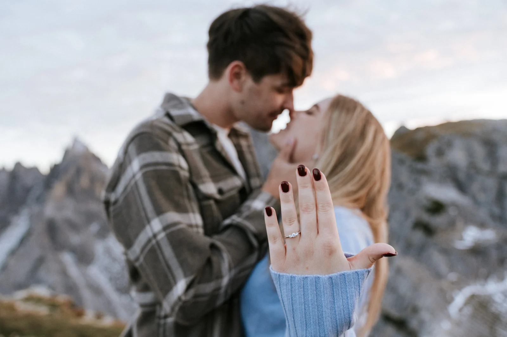
1. First message. Everything runs through the person planning it — never a shared chat. We learn the story, the fitness level and the vibe. 2. Spot & time. We pick a location that gives a natural reason to pause and the best light, usually sunrise. 3. The cover story. We agree on a believable reason to be up there early — "a sunrise hike," "a photographer friend meeting us." 4. The signal. You give us a small, invisible cue — a hand on the back, taking off a hat — so we know the second is coming. 5. From a distance. We shoot long, quiet and unnoticed. 6. The reveal. After the yes we walk over, introduce ourselves properly, and turn it into a relaxed couples session.

First light is our favourite, and not only for the colour. At sunrise the viewpoints are empty, the air is still, and the person being surprised has no crowd to feel self-conscious in front of. We look for a spot with a built-in reason to stop — a railing, a bench, a summit cross, the end of a jetty — so that pausing there feels like the most natural thing in the world rather than a staged halt. Then we let the place do the talking.
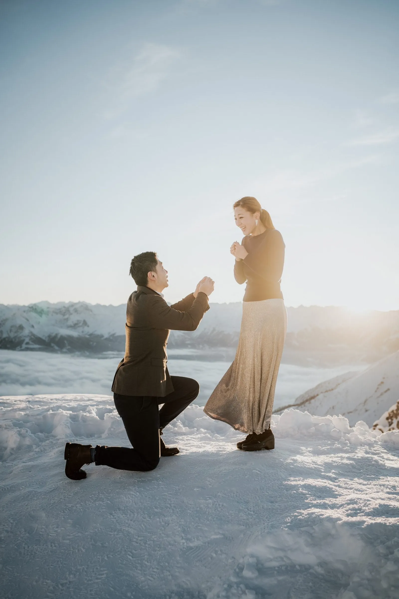
Golden hour in the evening works too, and is kinder to non-morning people — but it is busier, so we choose the spot more carefully. Exact sunrise and sunset times swing by nearly three hours across the year, so the plan always starts with your date.
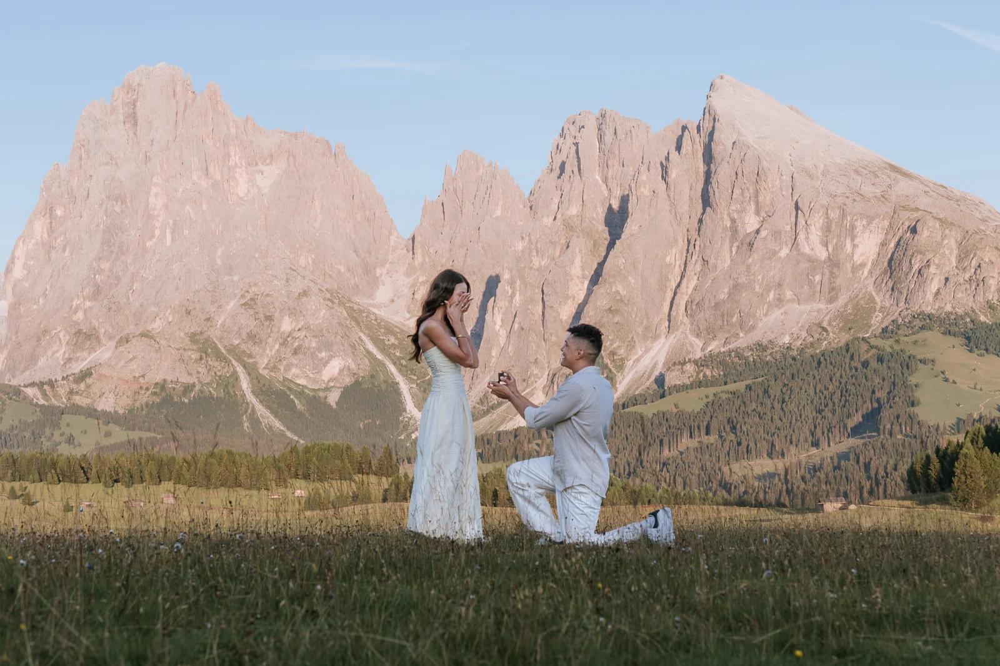
The whole plan lives in one thread between us and the person proposing — we never message you both, and we never tag the location. On the morning we are simply there first, cameras looking like they are pointed at the mountains, not at you. A long lens lets us stand far enough away that we read as another early hiker with a tripod. The only people who ever spot us are the ones already in on it. That distance is also why the photos feel so unguarded: nobody is performing for a camera they can see.

Often there are accomplices. A friend who suggests the sunrise walk, a parent kept in the loop for the phone call afterwards, a hotel that lets us in early — we coordinate all of it quietly so the story holds together. And if your partner is the suspicious type, we lean into the cover: we are happy to be introduced as friends of a friend who just happen to love photographing mountains at dawn. The more ordinary we seem, the bigger the surprise lands.
The best proposal spots share one thing: a natural reason to pause and little effort to get there — a long, sweaty hike tends to give the game away. Roadside lakes are perfect. The Lago di Braies boardwalk or little Lago d'Antorno give you a railing and a mirror of water before anyone arrives. Cable-car viewpoints are just as easy — Sass Pordoi's terrace, or the Nordkette minutes above Innsbruck — but the lifts open well after sunrise (the Seceda, for instance, not until about 08:30 in summer), so we plan the morning around the timetable.
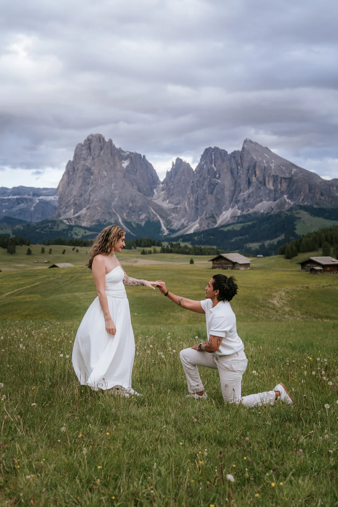
Open meadows like the Alpe di Siusi give you space, soft grass and the great tooth of the Sassolungo as a backdrop — gentle underfoot and endlessly photogenic. And if you do want a summit, we pick one with a short walk from a lift or a road, so the effort never signals what is coming. We match the spot to your fitness, the season and the light, and we always scout a second option in case the first is busy or socked in.
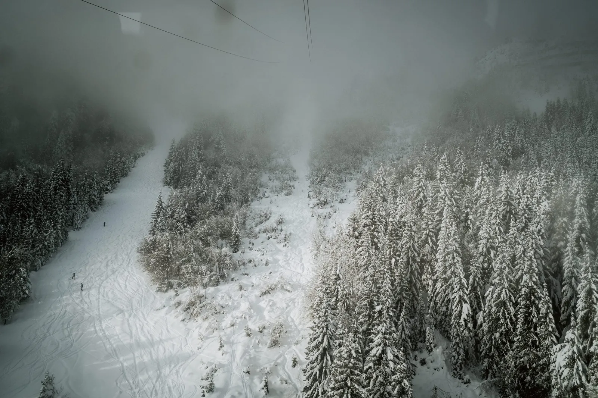
Carry the ring somewhere zipped and secure on the walk up — a closed pocket, not a coat you might hand over or a bag you might set down. If you are nervous about the box being spotted, take it out of the box and keep it loose in a small pouch; a bulky box is the classic tell. Tell us if you want a specific hand or angle for the moment, and we will position ourselves for it without ever crowding you.
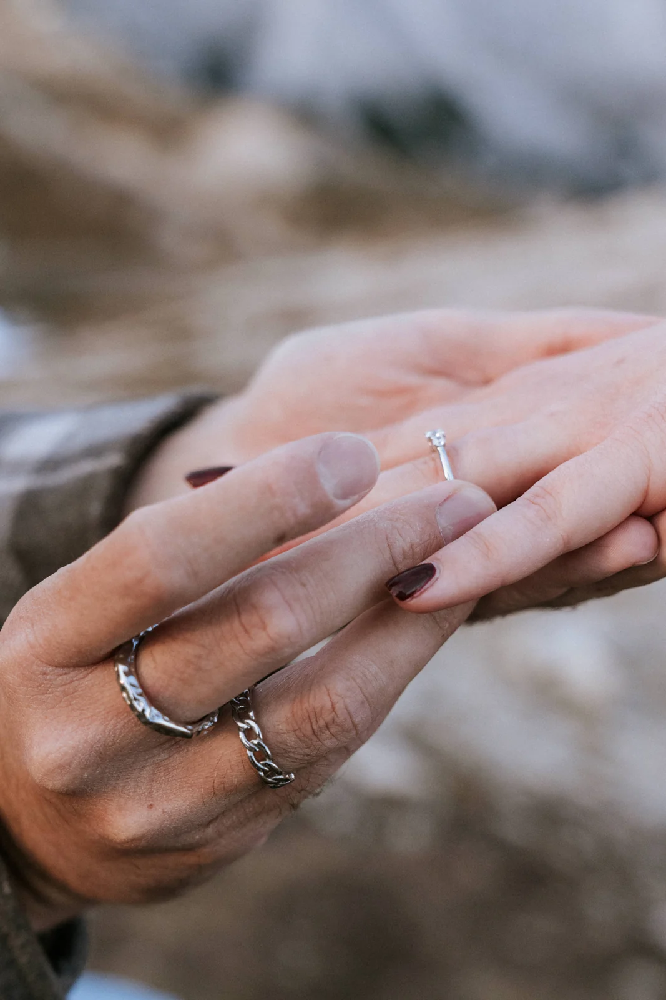
Once the yes is out, the ring becomes its own little series — the hand on a chest, the first look down at it, the shot against the peaks. These are the frames families zoom into, so we take a couple of minutes for them while you are still glowing, then let you go back to being giddy.
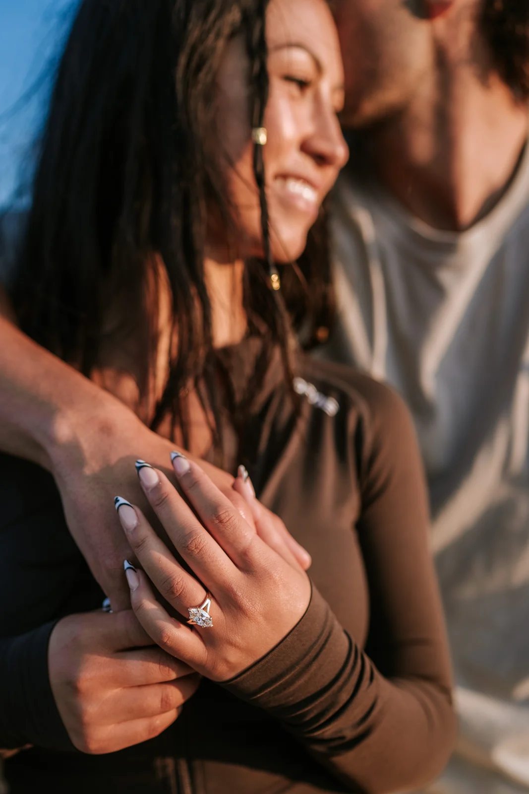
Mountain weather turns fast, so a proposal plan is never a single point — it is a window. We watch the forecast in the days before, hold a backup spot that works in worse light, and keep a spare morning where we can. If your first choice is fogged in, we move; if it clears an hour late, we wait. And do not fear a grey sky: low cloud drifting through the peaks, or a little rain on a lake, gives some of the most cinematic, tender frames we ever take. The only weather we truly avoid is the unsafe kind.
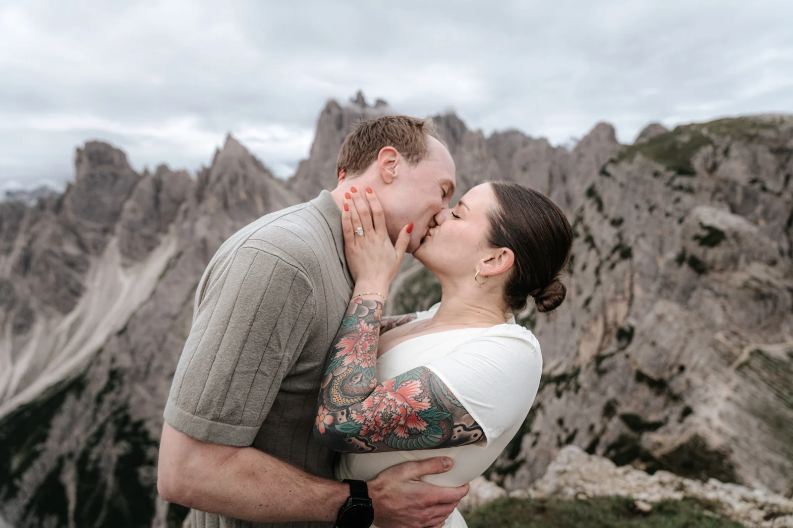
This is why we never sell a proposal as a single fixed slot. We build in a little give — an earlier alarm than strictly needed, a second spot ten minutes away, a backup morning if your trip allows it. Nine times out of ten the first plan works perfectly; the tenth time, that flexibility is the difference between a soggy compromise and a morning you could not have dreamed up. Nervous energy is enough to carry on the day — the weather is our job to worry about, not yours.
A proposal works year-round, and the season changes the whole feeling. Summer gives you green meadows, cotton grass and long light — the easiest logistics and the warmest mornings. Autumn brings larches turning gold and the first quiet after the crowds. Winter is our secret favourite: snow to the horizon, a hush over everything, and a kneel in fresh powder that looks like the inside of a snow globe — you just need warm layers and good boots. We help you pick the season that matches the picture in your head, then build the morning around it.
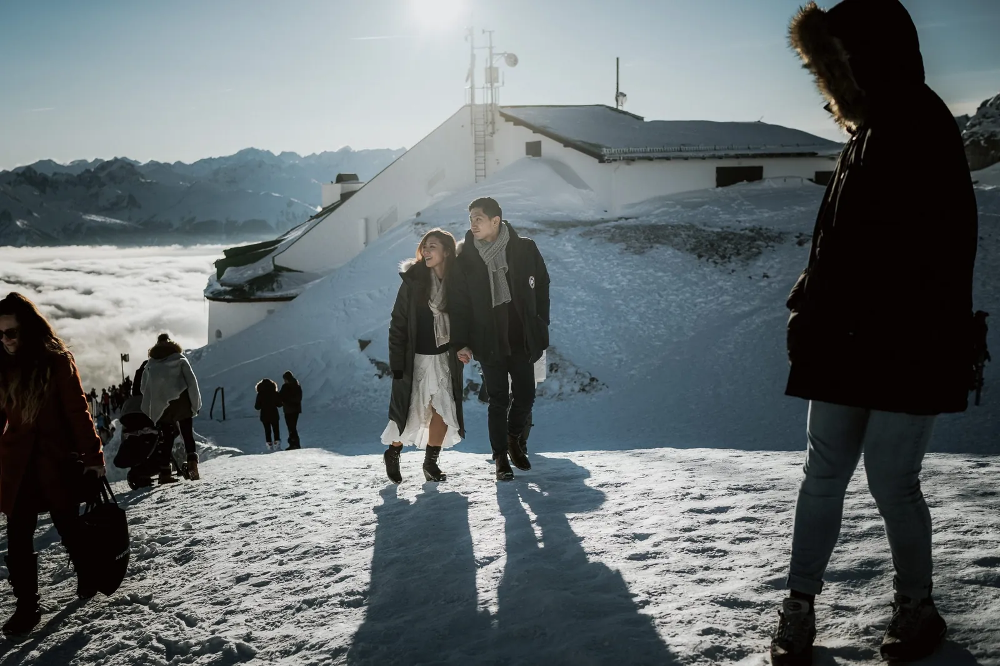
Dress like the best version of a normal day out — nice enough that you will love the photos, plausible enough that it does not tip your partner off. Solid, muted colours read beautifully against rock and snow; busy logos and neon do not. Bring warm layers you can peel for the frames and pull back on between them, and real shoes for the ground you will actually be standing on. If it is a surprise, the person being proposed to should just be told "we're doing sunrise photos, wear something you feel good in" — enough to look lovely, not enough to guess.

A few small things make a big difference in the pictures. Loose hair moves beautifully in a summit breeze, so skip the tight updo unless you love it. Bring a warm layer you can hide until the walk down, and think about your hands — they are the stars of every ring photo, so a little care there pays off. And whatever you wear, wear it in beforehand: new boots on a cold dawn are the one thing guaranteed to distract from the moment.
Most couples fly into Venice, Verona or Innsbruck and drive the last stretch — roughly two to three hours to the heart of the Dolomites, and Innsbruck is right at the foot of the Nordkette. Where cable cars are part of the plan, the first departure sets the morning: many lifts open only after sunrise, so a true first-light proposal often means a roadside lake or a spot you can reach on foot instead. We tell you exactly where to be, when, and how to get there, and can meet you at the trailhead so you are never navigating on the big morning.
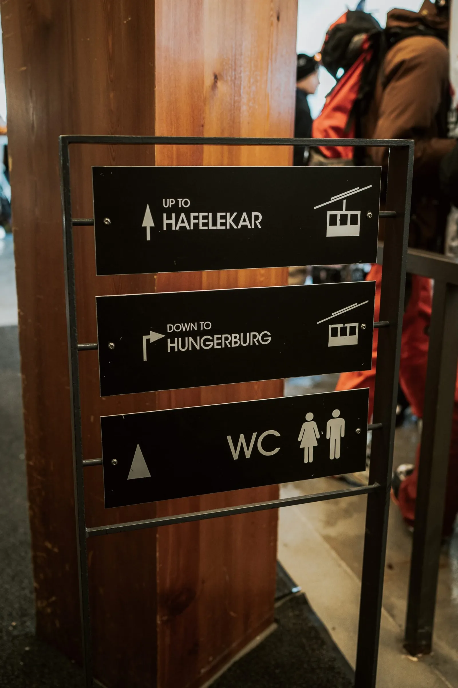
The famous spots fill up — Braies in particular is a different place at 06:00 than at 11:00. First light is the cleanest way past that: you get the railing, the reflection and the silence before the tour buses. Where driving access is limited we plan around it — the road to Lago di Braies, for example, needs an advance reservation from 09:00 to 16:00 between 1 July and 15 September, which is another reason we love being there for sunrise instead. Empty light is always the better light, and an empty viewpoint makes the surprise feel like it is yours alone.
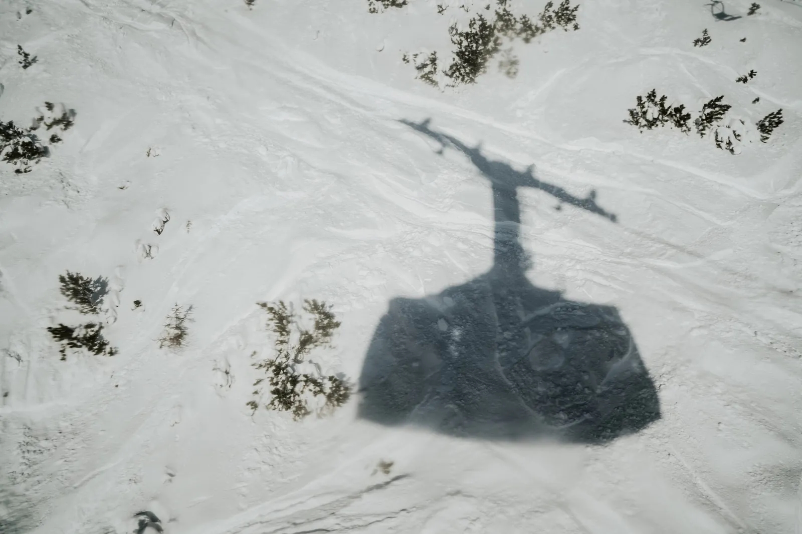
It helps to think in half-hours. A viewpoint that is serene at 06:15 can have a queue for the same railing by 07:30, so we build the morning backwards from the light and stay a step ahead of the first arrivals. If a spot is simply too popular to guarantee privacy, we will say so and offer a quieter twin nearby — there is almost always a lesser-known ledge or shoreline with the same peaks behind it and none of the crowd in front.
The moment is over in seconds; the celebration is the rest of the morning. Once we have introduced ourselves properly, we keep shooting a relaxed couples session while you are still buzzing — the laughing, the disbelief, the first phone call home. This is when the pictures get loose and joyful, and it is often the part couples treasure most. We can turn a few images around the same day so you can share the news before you are even back down in the valley.
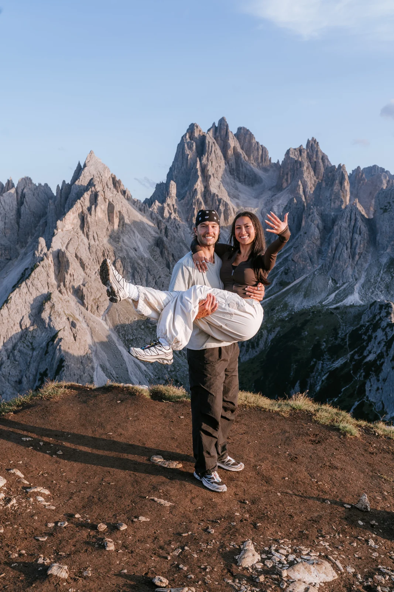
Make a day of it, too. The Dolomites reward a slow morning after: a hut breakfast, a swim in a cold lake, a quiet drive through the passes while it all sinks in. Cortina, Val Gardena and the villages of the Alta Badia sit within an hour of everything, full of terraces made for exactly this kind of celebrating. We are happy to point you to the good ones.
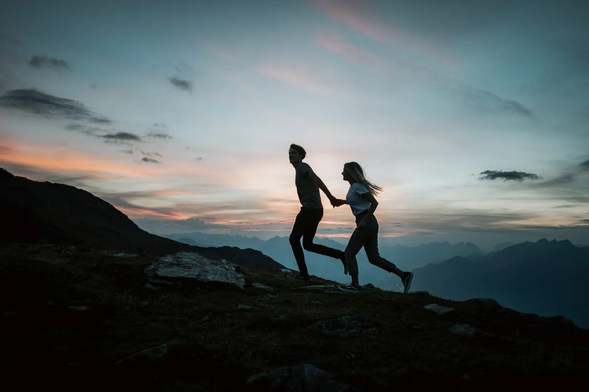
A surprising number of our couples propose here and then come back to marry here — the mountains that held the question turn out to be exactly where they want to say the vows. If that thought is already flickering, we can plant the seed on the same trip: show you the spot that would make a perfect elopement, talk through how the legal side works in Italy and Austria, and hand you a plan for later with zero pressure now. The proposal is the beginning of the story; sometimes we get to photograph the whole thing.

Two to eight weeks is comfortable. We need enough time to pick the spot, watch the forecast and hold a backup morning, but proposals are nimble — we have put beautiful ones together on a week's notice when the weather lined up.
We plan everything by message with the person proposing, arrive early and pass for ordinary hikers, then shoot from a distance with a long lens. Your partner usually only realises there was a photographer after the yes — which is when we step in for a proper session.
A roadside lake or a cable-car viewpoint, because neither needs a long hike that gives the surprise away. Lago di Braies and little Lago d'Antorno are favourites at first light; so is the Alpe di Siusi meadow and the Nordkette above Innsbruck. We match the spot to your fitness, the season and the light.
Mountain weather turns fast, so we always hold a backup spot and a spare morning. Low cloud and a little rain are not the enemy either — some of the most atmospheric proposal images we have taken happened in exactly that soft, moody light.
Yes, and most couples do. After the yes we keep shooting for a relaxed couples session to celebrate, and can send you a few images the same day to share with family. Many couples later come back to us to photograph the wedding itself.
Almost always. First light gives you empty viewpoints, soft colour and the mountain nearly to yourselves — the same spot at midday can be busy and harsh. We handle the timing; you just set the alarm.


Usiamo cookie per statistiche anonime (Google Analytics tramite Google Tag Manager) per migliorare il sito. L'analisi parte solo con il tuo consenso. Privacy